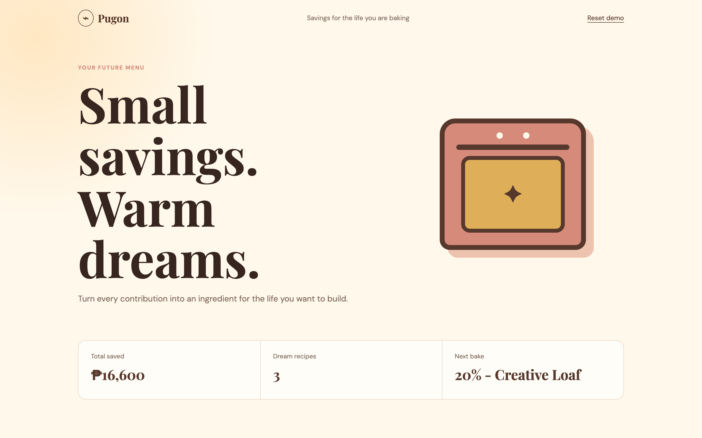
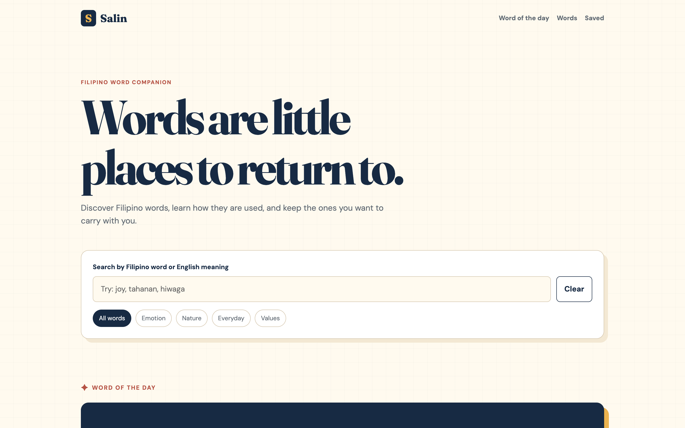
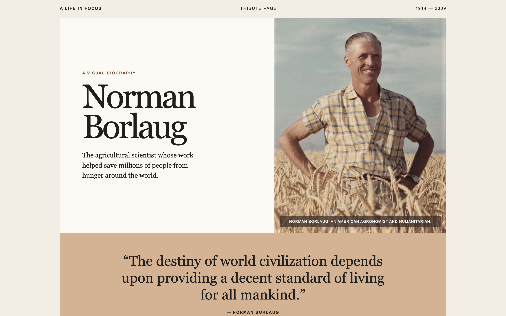

01 · Featured
Pugon
A cozy savings tracker that turns financial goals into recipes you can build step by step.
See project →Computer Science Student · Live Host
I am an aspiring frontend developer who enjoys building thoughtful, organized, and creative digital experiences.
View My ProjectsI am studying Computer Science with a specialization in Software Engineering at Far Eastern University. I am currently developing my skills in HTML, CSS, JavaScript, UI/UX design, and web development.
Selected work
A few projects where I turn what I am learning into working web experiences.

01 · Featured
A cozy savings tracker that turns financial goals into recipes you can build step by step.
See project →
02 · Featured
A Filipino word companion for exploring meanings, example sentences, and saved words.
See project →
03 · Featured
An editorial tribute page that presents the life and impact of Norman Borlaug.
See project →